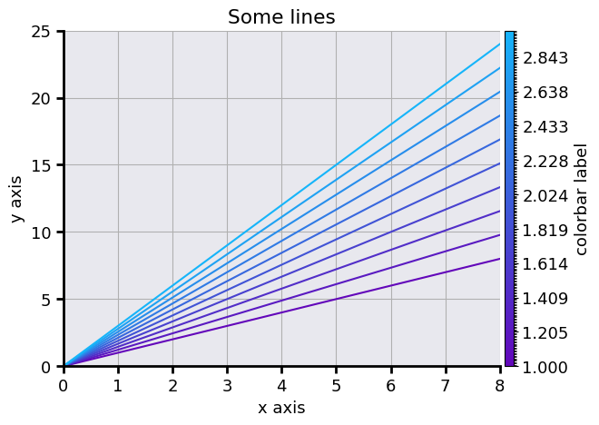
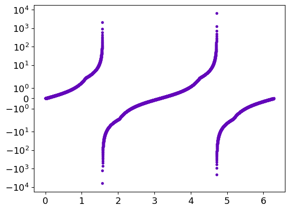

Examples of uses
Those are few examples of possible plots by PheiGraph. Many are directly derived from the matplotlib exemples here : In all the following exemples, one assumes the folowing library are imported :
import numpy as np
import phenigraph as g
Lines
The operations to plot lines with phenigraph are very closed to the usuals operations in matplotlib. But in some cases, they are built to be more efficents.
A linear plot
Let’s start to draw a simple line in linear coordinate, a cosinus :
x = np.linespace(0, 4. * np.pi,100)
y = np.cos(x)
gr = g.line(x, y)

One can plot another curve under the previous one :
gr.line(x, np.sin(x))
gr.show()
The name of the methods to add a line/image/histogram to a Graphique and their parameters are similar to the names of functions that can générate a new Graphique with thoses lines/images/histograms. Thoses two operations can be summerized in one single line :
gr = g.line(x, [np.cos(x), np.sin(x)])
Multiple lines
This new syntax allows plotting multiple lines very easily. If they are more than four lines, a colormap is used to differentiate the curves :
x = np.linspace(0, 10, 100)
slopes = np.linspace(1,3,10)
gr = g.line(x, [x**s for s in slopes])
gr.save("Multiples_lines1") # Saving the Graphique to use it and modify it latter

If like in this example, each curve is associated with a specific value, it’s possible to add a colorbar to the plot by simply adding a third array of the size of the number of lines :
x = np.linspace(0, 10, 100)
slopes = np.linspace(1,3,10)
gr = g.line(x, [x**s for s in slopes], slopes)
If one wants to plot only markers on this plot, the syntax is similar than for matplotlib :
x = np.linspace(0, 10, 20)
slopes = np.linspace(1,3,10)
gr = g.line(x, [x**s for s in slopes], slopes, "o")

If one wants to also draw the lines in addition to the markers, one simply have to add this parameter in the line function.
It will be applied for each curve :
x: np.ndarray = np.linspace(0, 10, 20)
slopes: np.ndarray = np.linspace(1, 3, 10)
gr: g.Graphique = g.line(x, [x * s for s in slopes], slopes, "o", linestyle="-")
To have a specific parameter for each curve, one simply has to provide a list with the parameters insted of the parameter itself:
x: np.ndarray = np.linspace(0, 10, 20)
slopes: np.ndarray = np.linspace(1, 3, 4)
gr: g.Graphique = g.line(x, [x ** s for s in slopes], "o", linestyle="-",
label=["s={:.3}".format(s) for s in slopes])

The colorbar properties can directly be configurate inside line. This is useful, for example, to add a label to it :
x: np.ndarray = np.linspace(0, 10, 20)
slopes: np.ndarray = np.linspace(1, 3, 10)
gr: g.Graphique = g.line(x, [x * s for s in slopes], slopes, "o", linestyle="-", kwargs_colorbar={"label": "Slopes"})
This is equivalent to :
x = np.linspace(0, 10, 20)
slopes = np.linspace(1,3,10)
gr = g.line(x, [x*s for s in slopes], slopes, "o", linestyle="-", kwargs_colorbar={"label":"Slopes"})
gr.config_colorbar(0, label="Slopes") # The first parameter is the number associated to the colorbar to be configurated. There is only one colorbar here so it is set to 0.

Errors plots
There are two ways to represants errors with bars and errorbar function or with shaded areas with errorplot function.
The syntax is very similar to the line function and its derivatives loglog, logx, polar…
The third argument is dedicated for errors.
The error can be a constant :
x = np.linspace(0, 2 * np.pi, 100)
y1 = np.cos(x) + 0.2 * np.random.randn(100)
y2 = np.sin(x) + 0.2 * np.random.randn(100)
err_y = 0.2
gr = g.errorplot(x, [y1, y2], err_y, alpha_error=0.5, label=["sin", "cos"])
with the parameter alpha_error that set the shaded eras transparency
x = np.linspace(0,2 * np.pi,100)
y1 = np.cos(x) + 0.2 * np.random.randn(100)
y2 = np.sin(x) + 0.2 * np.random.randn(100)
err_y = 0.2
gr = g.errorbar(x, [y1, y2], err_y, label=["sin", "cos"])
The errors can also be different for each point :
x = np.linspace(0, 2 * np.pi, 30)
y1 = np.cos(x) * (1 + 0.2 * np.random.randn(30))
y2 = np.sin(x) * (1 + 0.2 * np.random.randn(30))
err_y1 = 0.2 * abs(y1)
err_y2 = 0.2 * abs(y2)
grp = g.line(x, [np.cos(x), np.sin(x)], color=g.C20, show=False)
grp.errorplot(x, [y1, y2], [err_y1, err_y2],"o", label=["sin", "cos"])
grapp.save(filemame="Errorplot1") # Saving for Graphique tu reuse it latter
grp.show()
grb=g.line(x, [np.cos(x), np.sin(x)], color=g.C20, show=False)
grb.errorbar(x, [y1, y2], [err_y1, err_y2],"o", label=["sin", "cos"])
grb.save(filemame="Errorbar1") # Saving for Graphique tu reuse it latter
grb.show()
The errorbar function can also represent errors along the x-axis :
x = np.linspace(0,2 * np.pi,30)
x1 = x * (1 + 0.1 * np.random.randn(30))
x2 = x*(1+0.01*np.random.randn(30))
y1 = np.cos(x) * (1 + 0.2 * np.random.randn(30))
y2 = np.sin(x) * (1 + 0.2 * np.random.randn(30))
err_y1 = 0.2 * abs(y1)
err_y2 = 0.2 * abs(y2)
err_x1 = 0.1 * abs(x1)
err_x2 = 0.1 * abs(x2)
gr = g.line(x, [np.cos(x), np.sin(x)], color=g.C20, show=False) # The model is plotted in gray below the datas
gr.errorbar([x1, x2], [y1, y2], [err_y1, err_y2], [err_x1, err_x2],"o",
label=["sin", "cos"])
gr.show()
3 dimensionals data in 2D plots : the colorscale
It’s possible to represent 3-dimensional data with one dimension represented by a colorscale
x = np.linspace(0, 4. * np.pi, 100)
y = np.cos(x)
z = np.sin(x)
gr = g.loglog(x, y, z)

Text
It’s possible to directly write some text inside the plot with the text method directly derived from plt.text
The first argument is the abscissa of the text’s alignment point, the second its ordinate and the third the text itself.
It’s possible to configurate the location of this reference point relatively to the text and to rotate the text by
setting the horizontalalignment and vertical alignment parameters.
As for the line method, it’s possible to add several texts at once.
This example is directly adapted from the matplotlib documentation
gr=g.line([0,1,1,0,0],[0,0,1,1,0], show=False) # Creating a square
gr.text([0,1,1], [0,0,1], ['left top', 'center top', 'right top'],
horizontalalignment=['left', 'center', 'right'], verticalalignment='top', color=g.C2)
gr.text([0,0.5,1], [0,0.5,1], ['left bottom', 'middle', 'right bottom'],
horizontalalignment=['left', 'center', 'right'], verticalalignment=['bottom', 'center', 'bottom'],
color='k')
gr.text([0,0,1,0], [0.5,0.5,0.5,1], ['right center', 'left center', 'centered', 'rotated\nwith new line'],
horizontalalignment=['right', ' left', 'center', 'center'], verticalalignment='center',
rotation=['vertical', 'vertical', 'vertical', 45], color=g.C6)
gr.config_ax(xlim=[-0.5,1.5], ylim=[-0.5,1.5])
gr.show()
Polygons
It’s possible to draw shaded areas using the polygon method. This method uses the matplotlib.patches.PathPatch.
Integral as the area under a curve
This exemple is directly adapted from the matplotlib exemples
def func(x):
return (x - 3) * (x - 5) * (x - 7) + 85
x = np.linspace(0, 10) # x axis for the line
y = func(x) # y axis for the line
a, b = 2, 9 # integral limits
mask = (a <= x) * (x <= b)
xp = np.append(x[mask], [x[mask][-1], x[mask][0]]) # x axis for the polygon
yp = np.append(y[mask], [0.,0.]) # y axis for the polygon
inds = np.array([xp, yp]).T # Polygone's points coordinates
gr=g.line(x, y, linewidth=2, show=False) # Draw the function line
gr.polygon(inds, color=g.C2) # Draw the shaded area
# Creating a fancy figure
gr.text(0.5 * (a + b), 30, r"$\int_a^b f(x)\mathrm{d}x$",
horizontalalignment='center', fontsize=20, color="k")
gr.config_ax(xlim=[-0.1,11], ylim=[0., 1.1 * y.max()],
xticks=np.array([0,a,b,10]), xticklabels=np.array(["","a", "b", ""]),yticks=[])
gr.config_spines(spine=["top", "right"], visible=False)
gr.config_spines(spine=["bottom", "left"], lw=2)
gr.config_ticks(width=2, length=6)
gr.show()
Image
There is only one method/function to build image for a Graphique that uses pcolor for one dimensional image (with one colour) and imshow for 3-dimensional images (coloured images)
A one dimensional image
Let’s create a simple one-dimensional image :
x=np.linspace(0,100,50)
y=np.linspace(0,100,100)
xx, yy = np.meshgrid(x,y)
val=xx*2-yy**2 + xx * yy
g.image(val, x, y)
This is the most basic image you can get, but it’s possible to adapt the image to your needs.
The colormap
The colormap is automatically generated as a linear variation between two extremums colors. It’s possible to choose different colours than the default one :
x=np.linspace(0,100,50)
y=np.linspace(0,100,100)
xx, yy = np.meshgrid(x,y)
val=xx*2-yy**2 + xx * yy
g.image(val, x, y, color_min=g.C1, color_max=g.C17)
But it’s also possible to select one of the colorbar of plt.colorbar (see here for a full description of thoses colorbars)
x=np.linspace(0,100,50)
y=np.linspace(0,100,100)
xx, yy = np.meshgrid(x,y)
val=xx*2-yy**2 + xx * yy
g.image(val, x, y, cmap="inferno")
The colorscale is linear by default but can be modified :
x=np.linspace(0,100,50)
y=np.linspace(0,10,100)
xx, yy = np.meshgrid(x,y)
val= xx * yy
g.image(val, x, y, cmap="inferno", colorscale="log")
Finally, it’s possible to use a fully personalised colorbar with arbitrairy scales and number of color setps
x=np.linspace(0,100,50)
y=np.linspace(0,10,100)
xx, yy = np.meshgrid(x,y)
val= np.cos(2. * np.pi * xx / 100) + np.sin(2. * np.pi * yy / 10)
gr=g.Graphique()
gr.customized_cmap(np.linspace(-1,1,5), colors=g.linear_color_interpol
ation(val=np.linspace(-1,1,5), col_min=g.C1, col_max=g.C17))
gr.image(val, x, y, colorbar_index=0)
gr.show()
or with more colour-steps :
x=np.linspace(0,100,50)
y=np.linspace(0,10,100)
xx, yy = np.meshgrid(x,y)
val= np.cos(2. * np.pi * xx / 100) + np.sin(2. * np.pi * yy / 10)
gr=g.Graphique()
gr.customized_cmap(np.linspace(-1,1,255), colors=g.linear_color_interpol
ation(val=np.linspace(-1,1,255), col_min=g.C1, col_max=g.C17))
gr.image(val, x, y, colorbar_index=0)
gr.show()
gr.save("graph_image") # The Graphique is saved for a latter used
We have used the customized_cmap method that generate a custom colorbar for the Graphique that need a list of values and associated colours. To get thoses colours we use the linear_color_interpolation function that generate a list of colours for a given list that are linearly interpolated in the 3D colorspace between the col_min and col_max color.
(col_min and col_max will be associated respectively with the minimum and maximum values of the val table)
Saturation
If the range of values in the image is too large to be perfectly represented by a colorscale, it’s possible to saturate
the image by setting the vmin and vmax parameters. Any value below vmin in the image will be represented equal to vmin and any value above vmax will be set equal to vmax in the image :
x=np.linspace(0,100,50)
y=np.linspace(0,10,100)
xx, yy = np.meshgrid(x,y)
val= xx * yy
gr=g.image(val, x, y, cmap="inferno", vmin=10, vmax=800, show=False)
gr.config_colorbar(0, extend="both") # adding top and bottom arrow to the colorbar to indicate that the iomage is satureted
gr.show()
Colored image
It’s also possible to plot a colored image. To do so we will need the Image module of the PIL librairy :
from PIL import Image
Let’s open and show the eso1912j.jpg image, an image of the 2019 total eclipse at the European Southern Observatory (ESO)’s La Silla Observatory in Chili that can be downlowad here
image=np.array(Image.open("eso1912j.jpg"))
gr=g.image(image, show=False) # Creating the Graphique with the image
# Remouving the axis borders and ticks
gr.config_spines(spine=["bottom", "left"], visible=False)
gr.config_ax(xticks=[], yticks=[])
gr.show()
Contours
It’s possible to draw contours in a Graphique, the method/function is based on plt.Axes.contour
Levels of an image
If there is already an image into the Graphique, the image data can be used to draw levels lines
Configure the plots
It’s possible to configurate the plot via the config_ax method. This method applies to the Graphique axis the method axis.set
One can set the limits for the x or y-axis via the parameters xlim and ylim, the x and y labels via xlabel and ylabel,
the title, the facecolor.
One can also configurate the whole Figure with the config_fig method
Let us take our previous Graphique and configure it :
gr.config_ax(xlabel="x axis", ylabel="y axis", xlim=[0,8], ylim=[0,25]
, facecolor=(180/255,180/255,200/255,0.5), title="Some lines") # Putting names on axis, set limit on y and y axis,
# setting a grey trensparent background
gr.grid = True # Adding a grid to the plot
gr.config_colorbar(label="colorbar label") # Setting a name on the colorbar axis
gr.config_spines(spine=["top", "right"], visible=False) # Remouving the top and right limit of the plot
gr.config_spines(spine=["bottom", "left"], lw=2) # Setting the lineweight of the remaing borders of the figure to 2
gr.config_ticks(width=2, length=6) # Setting the ticks width and length
gr.config_fig(facecolor=g.Ctrensp) # Setting a trensparent background for the rest of the figure
gr.show()

It can be useful to get transparent figures, for example, if one wants to use them on slides. One can use in that case the g.Ctrensp color for both the axis and the figure
Setting the scales
The scales can be set via the config_ax method via the keywords xscale and yscale. The available scales linear, log for a logarithmic scale
or symlog for a logarithmique scale for both positives and negatives values.
One can also build a Graphique with dedicated derived methods/functions loglog for a logarithmic scale on both axis,
logx for a logarithmic scale on axis x and linear on axis y, logy, symloglog, symlogx or symlogy.
x = np.logspace(0, 10, 20)
pwd = np.linspace(1,3,10)
gr = g.line(x, [x**p for p in pwd], pwd, "o", linestyle="-", show=False)
gr.config_ax(xscale="log", yscale="log")
gr.show()
is equivalent to
x = np.logspace(0, 10, 20)
pwd = np.linspace(1,3,10)
gr = g.loglog(x, [x**p for p in pwd], pwd, "o", linestyle="-")
Another example with the tan function :
x = np.linspace(0, 2. * np.pi, 1000)
gr = g.logy(x, np.tan(x), ".")
To see both positives and negatives values, one can use :
x = np.linspace(0, 2. * np.pi, 1000)
gr = g.symlogy(x, np.tan(x), ".")

Polar plots
This is also possible to project the Graphique in polar coordinate :
r = np.linspace(0, 1, 100)
theta = np.linspace(0, 2 * np.pi, 100)
phi = np.linspace(-np.pi, np.pi, 10)
gr = g.polar(r, [theta + p for p in phi])
Setting the plot sequence
By default, the plot order for lines is determined by the order of there add to the Graphique. Each line is associated with its number in the line’s lists inside the Graphique. Its possible to change this default order to put lines in the for or background, for example. It’s also possible to hide some of them by remouving their number from the plot sequence. It’s even possible to add hide line in a Graphique, it can be useful if there is too much data to represent in a single plot. The user can reset later the plot order to show thoses lines.
For exemple let’s plot the model curve of the Graphique Errorplot1 in the foreground
(they are saved in the background) :
grb = g.Graphique("Errorplot1")
grb.set_indexs_plot_lines([2,3,0,1])
grb.show()
Since we have built this Graphique just before, we have known the lines orders: the two firsts where the model and two last the errorlines.
Sometimes it could be more difficult to access to this order. If there are few lines, its possible to plot each one one by one to determine the order.
The number of lines can be found using len(grb.lines_x).
It’s possible to access to the values of lines themselves:
— The abscissa are in Graphique.lines_x each element of this list is a list of abscissa of a line
- The ordinates are in Graphique.lines_y
- The error in x and y-axis (if there are) are in Graphique.err_x andGraphique.err_y. An empty list stands for the lines without errors.
- The parameter dictionary for each line are in Graphique.param_lines. It can be useful if there are labels associated with each line.
Each other elements have a parameter hide in their configuration dictionary than can be set True or False.
These configuration dictionaries can be updated with dedicated methods such as config_colorbars or config_image.
Customization of Graphique’s elements
It’s possible to modifie the properties of some Graphique’s elements after they were created via the config_* methods.
The config_ax and config_fig method has already been presanted.
There is config_line method that can be used to change the line’s properties.
Let’s load the Multiples_lines1 Graphique :
grm = g.Graphique("Multiples_lines1")
Its possible, for example, to modifie the properties of all lines at once :
grm.config_line(lw=2) # Setting a lineweight of 2 for each lines
grm.show()
But also to modifie the properties of a single line :
grm.config_line(0, color=g.C5, marker="x", label="First line")
grm.show()
Setting the global font properties
It is possible to simply set the font properties for the whole Graphique with the config_font method.
It’s possible to modifie:
The
styleswithnormal,italicandobliquekeys.The
sizewith its numerical valueThe
variantswithnormalandsmall-capsAnd finally the
weightthat can belight,normal,medium,semibold,bold,heavyorblack
For exemple let’s modify the font of the Graphique Errorplot1 :
gr=g.Graphique("plot_errorplot_2")
gr.config_font(weight="bold", size=16)
gr.show()
Saving the Graphique
To save the plot itself, one should use the save method. The Graphique has a default filename which is use for both the .npz file and the images via save_figure. The default directory to save the plot is the working directory, but it can also be set to another one if needed.
To save an image of the figure, one can use the save_figure method. The image will be saved with the same name that the Graphique itself in the format Graphique.ext which is png by default.
gr.filename = "Some_lines"
gr.directory = "your_directory"
gr.save()
gr.ext = "svg" # The image will be save in svg
gr.save_figure(dpi=400) # The image is save with 400 dpi